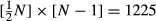
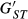

diveRsity: An R package for the estimation and exploration of population genetics parameters and their associated errors
Summary
- We present a new R package, diveRsity, for the calculation of various diversity statistics, including common diversity partitioning statistics (θ, GST) and population differentiation statistics (DJost,
 , χ2
test for population heterogeneity), among others. The package
calculates these estimators along with their respective bootstrapped
confidence intervals for loci, sample population pairwise and global
levels. Various plotting tools are also provided for a visual evaluation
of estimated values, allowing users to critically assess the validity
and significance of statistical tests from a biological perspective.
, χ2
test for population heterogeneity), among others. The package
calculates these estimators along with their respective bootstrapped
confidence intervals for loci, sample population pairwise and global
levels. Various plotting tools are also provided for a visual evaluation
of estimated values, allowing users to critically assess the validity
and significance of statistical tests from a biological perspective.
- diveRsity has a set of unique features, which facilitate the use of an informed framework for assessing the validity of the use of traditional F‐statistics for the inference of demography, with reference to specific marker types, particularly focusing on highly polymorphic microsatellite loci. However, the package can be readily used for other co‐dominant marker types (e.g. allozymes, SNPs).
- Detailed examples of usage and descriptions of package capabilities are provided. The examples demonstrate useful strategies for the exploration of data and interpretation of results generated by diveRsity. Additional online resources for the package are also described, including a GUI web app version intended for those with more limited experience using R for statistical analysis.
Introduction
As a consequence of the growing suite of statistical
genetics tools, which are often tailored to particular marker types, the
analyses of population genetic data are becoming an increasingly
complex task (Excoffier & Heckel 2006). For instance, F‐statistics is a commonly used framework for the description of genetic diversity partitioning within and among populations. F‐statistics estimators (e.g. θ, GST) suffer from an incompatibility when applied to highly polymorphic microsatellite markers (Hedrick 1999; Jost 2008), as a result of their negative dependence on within subpopulation heterozygosity (Jost 2008).
Thus, for loci with many alleles (e.g. >10), within subpopulation,
heterozygosity will invariably be high, and as a consequence,
‘traditional’ F‐statistics will have a theoretical maximum well below the expected FST = 1. Attempts have been made to overcome this issue, most notably by Hedrick (2005), with the development of  and more recently, Jost (2008) with the development of DJost. However, much confusion still exists about what these ‘new’ statistics should actually be used for (Gerlach et al. 2010). It is not the purpose of this study to elaborate on such issues; however, interested readers are encouraged to see Jost (2008), Meirmans & Hedrick (2011) and Whitlock (2011) for useful reviews.
and more recently, Jost (2008) with the development of DJost. However, much confusion still exists about what these ‘new’ statistics should actually be used for (Gerlach et al. 2010). It is not the purpose of this study to elaborate on such issues; however, interested readers are encouraged to see Jost (2008), Meirmans & Hedrick (2011) and Whitlock (2011) for useful reviews.
To add to the complexity, recent advances in molecular
screening methodologies have greatly facilitated the ease with which
genetic data can be generated. As a consequence, an increasing number of
researchers, often with a limited background in statistical genetics
analyses (Karl et al. 2012),
face the difficult task of analysing and interpreting such data. Thus,
software tools that facilitate this task, by providing suitable
frameworks to allow for informed analysis pipelines, are essential. To
this end, we present the software diveRsity. This R package allows the estimation of various population genetic summary statistics including the two ‘traditional’ F‐statistics analogues; θ (Weir & Cockerham 1984) and GST (Nei & Chesser 1983), and the two ‘new’ differentiation statistics;  (Hedrick 2005) and DJost (Jost 2008),
as well as their unbiased/nearly unbiased estimators. Each statistic
can be estimated for locus, global and sample pairwise comparisons. The
package also provides functionality for the estimation of 95% confidence
intervals at all relevant levels, through an integrated bootstrapping
procedure. Uniquely to diveRsity,
various plotting functions, designed to allow researchers to assess the
validity of using their particular data set (or suite of marker loci)
for the inference of geneflow using the F‐statistics framework,
are also provided, as well as visualisation tools for large pairwise
matrices of genetic differentiation and parameter confidence intervals.
Furthermore, diveRsity also
provides a range of other statistical tools, which are commonly used in
population genetic analyses pipelines, but are rarely integrated into a
single software package.
(Hedrick 2005) and DJost (Jost 2008),
as well as their unbiased/nearly unbiased estimators. Each statistic
can be estimated for locus, global and sample pairwise comparisons. The
package also provides functionality for the estimation of 95% confidence
intervals at all relevant levels, through an integrated bootstrapping
procedure. Uniquely to diveRsity,
various plotting functions, designed to allow researchers to assess the
validity of using their particular data set (or suite of marker loci)
for the inference of geneflow using the F‐statistics framework,
are also provided, as well as visualisation tools for large pairwise
matrices of genetic differentiation and parameter confidence intervals.
Furthermore, diveRsity also
provides a range of other statistical tools, which are commonly used in
population genetic analyses pipelines, but are rarely integrated into a
single software package.
Another major advantage of using diveRsity is that it produces summary data structures, which are very close to publication‐ready formats (e.g. Fig. 1). Given that the compilation of such summary data is time consuming and often involves the use of several software packages, diveRsity offers a valuable addition to the molecular ecologist's statistical toolkit. Its implementation as an R package also makes diveRsity ideal for easy incorporation into analysis pipelines where batch processing of files/data is required, as is often the case in simulation‐based studies.
This package is intended to promote a more considered and
simplified approach to frequentist population genetic structure
analyses. Through the inclusion of diversity partitioning statistics
(e.g. θ & GST), differentiation statistics (e.g.  & DJost),
as well as functionality to assess the behaviour of these statistics
across loci and population samples, we hope to give researchers the
necessary tools to make educated decisions about the statistical and
biological validity of their analyses with relative ease. Following this
rationale, we have also opted to omit the option for users to carry out
P‐value null hypothesis testing in relation to F‐statistics
and population sample differentiation estimators. This decision was
taken given the lack of meaningful information conveyed through the use
of P‐values in this context, as well as the many misconceptions that exist regarding the biological interpretation of P‐values in relation to these statistics (Wagenmakers 2007).
We have instead provided functions to allow users to estimate 95%
confidence intervals (calculated as the 2·5% and 97·5% quantiles of a
bootstrap distribution), for a range of statistical estimators
calculated by the package, thus, leading to more reliable conclusions
about the biological significance of trends in the data, (see Fig. 2 in du Prel et al. 2009), leaving less room for erroneous interpretation.
& DJost),
as well as functionality to assess the behaviour of these statistics
across loci and population samples, we hope to give researchers the
necessary tools to make educated decisions about the statistical and
biological validity of their analyses with relative ease. Following this
rationale, we have also opted to omit the option for users to carry out
P‐value null hypothesis testing in relation to F‐statistics
and population sample differentiation estimators. This decision was
taken given the lack of meaningful information conveyed through the use
of P‐values in this context, as well as the many misconceptions that exist regarding the biological interpretation of P‐values in relation to these statistics (Wagenmakers 2007).
We have instead provided functions to allow users to estimate 95%
confidence intervals (calculated as the 2·5% and 97·5% quantiles of a
bootstrap distribution), for a range of statistical estimators
calculated by the package, thus, leading to more reliable conclusions
about the biological significance of trends in the data, (see Fig. 2 in du Prel et al. 2009), leaving less room for erroneous interpretation.
Description
diveRsity is a package written for use in R (R Development Core Team 2012). It is primarily designed for the estimation, exploration and validation of genetic differentiation/structure indices. The package aims to consolidate under the same work environment, many of the most popular population genetic statistics such as those mentioned above, in order to provide researchers with a simplified way in which to calculate and compare these statistics. This strategy is particularly useful for the identification of polymorphism‐based biases mentioned previously. This information can be subsequently used, along with additional exploration tools implemented in the package, to make informed decisions about which statistical measures or molecular markers can be appropriately applied to address a particular question.
diveRsity also calculates a plethora of other statistics and has various other population genetics applications. Table 1 provides a list of functions along with brief descriptions of their specific purposes. The package accepts raw genotype data for any group of co‐dominant molecular markers in the genepop file format (Raymond & Rousset 1995). There is no limit to the size of the accepted input file other than the amount of random access memory (RAM) available to users. In addition to providing users with the ability to efficiently estimate an array of population genetic statistics, diveRsity is also particularly flexible in terms of return result formats (e.g. text files, excel workbooks and native R objects such as matrices and data frames). This flexibility facilitates subsequent downstream analysis (e.g. incorporation into simulation or approximate bayesian computation (ABC) pipelines as the summary statistic calculation software). A list of specific output formats is also summarised in Table 1.
| Function | Returned objects | Description |
|---|---|---|
| chiCalc | R character matrix, optional.txt file | Test for genetic heterogeneity between population samples using the chi‐square distribution. The function provides the unique option to disregard alleles of very low frequencies using the argument minFreq |
| corPlot | R graphics plot (not automatically written to file) | Correlation plotting of diversity statistics against the number of alleles per locus. The function is intended to aid in the assessment of marker suitability for the estimation of geneflow |
| divPart | .html,.png,.txt,.xlsx, R data object | A function for the calculation of diversity partition statistics and their associated variance through bootstrapping. Global, locus and pairwise levels are addressed |
| divOnline | NA | This function launches the web app version of divPart. Local resources are used when running analyses. The system default web browser is used to host the application |
| difPlot | .html,.png | Provides visualisation and exploration of pairwise genetic differentiation. The function is particularly useful for data sets containing a large number of population samples. |
| inCalc | .png,.txt,.xlsx, R data object | A function for the calculation of allele and locus informativeness for the inference of ancestry. Bootstrap confidence intervals are also calculated. |
| readGenepop | R data object | A general purpose function designed to calculate basic descriptive parameters from raw genetic data. This function is intended as a tool for developers of population genetics software in R. |
| divRatio | R data object,.txt, or.xlsx | This function calculates the diversity ratio statistics presented in (Skrbinšek et al. 2012) |
| bigDivPart | R data object,.txt, or.xlsx | This function is identical to divPart except for its lack of bootstrapping functionality. It is coded in a specific way to allow the sequential analysis of large number of markers (e.g. <100 000) |
| fstOnly | R data object,.txt, or.xlsx | This function calculates only Weir & Cockerham's 1984 F‐statistics. The function is slightly faster than divPart, which also calculates these statistics |
| divBasic | R data object,.txt, or.xlsx | This function calculates basic population bases statistics such as Allelic richness, Hardy–Weinberg equilibrium and locus expected and observed heterozygosis |
Dependencies and suggested packages
In general, diveRsity can be used with a standard R installation and two additional extension packages (plotrix and shiny). The functions divPart, inCalc, chiCalc and readGenepop, divBasic, bigDivPart and divRatio, (i.e. the major analytical functions), can all operate independently of nonstandard packages. The only disadvantages of this approach are slower execution times (i.e. parallel computation is not available) and a limited number of formats available for returned results. To fully capitalise on the additional features of diveRsity (listed in Table 1), the installation of all suggested packages is recommended. Details of these packages are given in Table 2.
| Package | Implementation | Status | Citation |
|---|---|---|---|
| Xlsx | Used in divPart and inCalc to return multisheet.xlsx workbooks | Suggested | Dragulescu (2012) |
| sendplot | Used in divPart, divPlot and inCalc to produce tooltips for data visualisation | Suggested | Gaile et al. (2012) |
| doParallel | Used in divPart and inCalc for parallel computation | Suggested | Revolution Analytics (2012a) |
| parallel | Used in divPart and inCalc for parallel computation | Suggested | R Development Core Team (2012) |
| foreach | Used in divPart and inCalc for parallel computation | Suggested | Revolution Analytics (2012b) |
| iterators | Used in divPart and inCalc for parallel computation | Suggested | Revolution Analytics (2012c) |
| plotrix | Used in difPlot for additional plotting features | Dependency | Lemon (2006) |
| shiny | Used to build and run the web app version of the divPart function | Dependency | RStudio & Inc (2012) |
Comparisons with other software
The main motivation behind the development of diveRsity was to provide a cross‐platform software, which allows comprehensive and fast frequentist analysis of co‐dominant molecular data, while maintaining usability and convenient result formats. On each of these aims, diveRsity performs comparatively better in relation to other similar software.
Comprehensiveness
When compared with other software which estimates similar statistics, diveRsity generally provides a more comprehensive range of parameter calculation options. In terms of the total number of available population genetics statistics, with the possible exception of the Mac OS X only program, GenoDive (Meirmans & Van Tienderen 2004), diveRsity estimates many more than DEMEtics (Gerlach et al. 2010), SMOGD (Crawford 2010), mmod (Winter 2012), hierfstat (Goudet 2004) or SPADE (Chao & Shen 2003).
Focusing only on diversity partitioning/differentiation statistics, diveRsity overlaps in its calculation of DJost with all of the above‐mentioned software. However, diveRsity is the only package that allows the estimation of 95% confidence intervals, globally (i.e. for all samples and loci), per locus (i.e. over all samples) and for all pairwise sample comparisons (i.e. over all loci per population pair). SMOGD, for example, which is perhaps the most popular of these applications (with over 212 citations according to Google scholar), calculates bootstrapped confidence intervals for DJost at the locus level across all population samples, but does not provide this estimation for either the global or pairwise levels.
Despite the focus of this study on diversity partition/differentiation statistics, diveRsity also estimates many other useful population genetics statistics. These include, χ2 tests of Hardy–Weinberg equilibrium (HWE), Allelic richness (Ar), Chi‐square tests for sample homogeneity, ‘Yardstick’ diversity standardised ratios (Skrbinšek et al. 2012) and locus informativeness for the inference of ancestry (Rosenberg et al. 2003). Contrary to other similar programs, diveRsity also provides various exploratory plotting tools, which can be very useful for the identification of meaningful trends within results with minimal effort (e.g. Example 1). Typically, this task would involve the compilation of output results from various programs and subsequent visualisation in an independent software package (e.g. Microsoft Excel). A full description of diveRsity's functionality can be found by typing either of the following commands into the R console:
# diveRsity must be installed
# 1) package help pages
help(package =”diveRsity”)
# 2) package user manual
vignette(“diveRsity”)
Speed
Given the different analytical focuses of distinct softwares, performance comparisons in terms of speed are not straightforward. For example, while in one software, a given test statistic might be estimated using a maximum likelihood procedure, in another, a more computational intensive procedure (e.g. bootstrapping) may be used. For the purposes of this study, comparisons were restricted to instances were distinct softwares implemented similar computational processes to calculate a similar suit of statistical parameters. Based on these criteria, only two truly comparable speed comparisons were possible between diveRsity and any of the above listed software.
The first is a comparison of locus confidence interval estimation using bootstrapping with SMOGD. The reproducible code used to run diveRsity is as follows:
system.time({
# load diveRsity
library(“diveRsity”)
# load Test_data
data(Test_data)
# run the analysis
x <‐ divPart(infile = Test_data, outfile = NULL, gp = 3,
pairwise = TRUE, WC_Fst = FALSE, bs_locus = TRUE,
bs_pairwise = FALSE, bootstraps = 1000, plot = FALSE,
parallel = TRUE)
})
When running SMOGD on the example data set Test_data (see Keenan et al. in press for details on these data), with bootstraps set to 1000, the time taken to return results to the web browser is 2 min 34·1 s, while diveRsity takes only 1 min 17·3 s to carry out the same calculations on a laptop with an Intel Core i5‐2435 CPU @ 2·49GHz. It is also relevant to note that diveRsity's performance can be significantly increased with the use of additional CPUs.
The second comparison involves the calculation of diversity partitioning statistics per locus for large data sets (e.g. RAD‐seq derived SNP genotypes). This comparison was carried out between the diveRsity function bigDivPart and the hierfstat function basic.stats. For this test, a simulated data set of 268 individuals across four population samples genotyped for 55 200 bi‐allelic SNP loci was used. To complete the entire analysis, diveRsity took 3 min 20·1 s, while hierfstat took 6 min 44·8 sec, using the same laptop as described above. Such speed differences become even more important with the increasing rate at which large arrays of loci can be genotyped for large numbers of individuals.
Usability & convenience
Similar to other R packages, to fully benefit from all features built into diveRsity, a reasonable level of expertise in R is required. However, diveRsity has been designed so that even R beginners or those with very limited expertise can easily carry out comprehensive analysis of their data, including results being written to file, in many cases with a single command line. This is in contrast to other packages such as mmod and hierfstat, which invariably require users to export their own result from the R environment, as well as execute more functions to calculate fewer parameters than diveRsity. An example of the convenient results formats returned by diveRsity is shown in Fig. 1.
In keeping with the focus on ease of use, diveRsity also includes a web application, which provides a browser based user interface for the estimation of the most popular statistics implemented in the command line version of the package. This application was built using the framework provided by the R package, shiny (RStudio & Inc 2012), and provides users with a range of benefits including an easy to use interface and downloadable result files. The browser user interface also allows users to run their analyses on a remote server; thus, local system resources are not consumed. The application can be accessed at: http://glimmer.rstudio.com/kkeenan/diveRsity-online/.
Users can also run this application locally by executing the following command in the R console:
# after loading diveRsity
divOnline()
Despite an emphasis on simplicity, diveRsity still retains all of the functionality and flexibility provided by the R environment (i.e. all results are returned to the current session workspace). Thus, users with more experience can easily pipe results from their analyses into downstream custom analyses (e.g. ABC).
Accessing the package
The diveRsity package is hosted on the Comprehensive R Archive Network (CRAN), and can be downloaded using the install.packages function in R. Simply type the following command into the R console:
install.packages(“diveRsity”, dependencies = TRUE)
Providing the user has a working internet connection, and following the selection of a suitable CRAN repository mirror, the package will download and install automatically.
Ongoing development of diveRsity can also be tracked at: http://diversityinlife.weebly.com/software.html
This web page contains the latest developmental versions of the package as well as an update log.
Examples
As a demonstration of some of the envisaged applications of diveRsity, two reproducible examples are provided below. These examples assume that the diveRsity, shiny, doParallel, sendplot and plotrix packages have been installed as well as their dependencies. For additional examples, users are encouraged to read the package manual.
Example 1. Using visualisation tools to investigate large genetic differentiation matrices
Pairwise genetic differentiation is an important parameter in the assessment of relationships among populations within a geographical context. To date, the true potential of pairwise genetic differentiation statistics has not been fully realised, owing mainly to difficulties in identifying meaningful trends in often very large numbers of population comparisons.
However, using both the divPart and difPlot functions, diveRsity allows users to visualise large pairwise matrices of genetic differentiation, making the identification of particularly differentiated population samples relatively straightforward. This procedure is demonstrated below.
Load diveRsity into the current R session:
# Load the diveRsity package
require(“diveRsity”)
In this example, the Big_data data set (distributed with diveRsity) will be used. The data were simulated under a hierarchical island model (i.e. five island groups with 10 subpopulations each allowing high geneflow within island groups and low geneflow among island groups), using the software EASYPOP v1.7 (Balloux 2001). Population samples within the Big_data data file were arranged in order of geographical proximity for the purpose of demonstrating how diveRsity can be used to identify broad‐scale geographical trends from genetic data.
# Load'Big_data'
data(Big_data, package =”diveRsity”)
The divPart function is first used to calculate the required pairwise statistics matrices. In this example, the argument parallel will be set to TRUE as a large number of comparisons have to be computed (i.e.  for N = 50).
# Assign the results to the variable'pwStats'
# (i.e. pw = pairwise)
pwStats <‐ divPart(infile = Big_data, outfile =”Big_results”,
gp = 2, WC_Fst = TRUE, bs_locus = FALSE,
bs_pairwise = FALSE, bootstraps = 0,
Plot = FALSE, parallel = TRUE)
The resulting R object, pwStats contains the required pairwise statistics, which can be passed to the function difPlot for visualisation.
difPlot(x = pwStats, outfile =”Big_results”,
interactive = TRUE)
This command will write four.png files (one for each estimated statistic) and four.html files to the folder Big_results under the current R working directory. An example of the functionality of the.html tooltips is given in Fig. 2. From this figure, it is clear that the data are represented by five distinct genetic groups, which correlates with the simulation conditions described above. There are clearly high levels of differentiation among island groups (light blue/white) and low levels of differentiation within island groups (dark blue). This graphical representation perfectly relays what is known to be genetically/evolutionarily true (though natural population systems will rarely be so ideal).
Figure 2 also illustrates the ability to rapidly identify population pairs of interest by simply positioning the mouse pointer over a particular comparison square/pixel. In this example, the pairwise comparison between populations 18 vs. 23, (GST = 0·8883, θ = 0·9408,  = 0·9927 and DJost = 0·8802), indicates that these two populations are highly differentiated from one another.
Example 2. Assessing polymorphism bias in diversity partitioning estimators
As discussed above, diversity partitioning statistics such as GST and θ are negatively dependent on within subpopulation heterozygosity. Where this negative dependence is present (e.g. when using highly polymorphic microsatellites), it is important to ensure that inferences made from calculated values do not violate important assumptions. Using the functions divPart, readGenepop and corPlot, it is possible to carry out an ad hoc assessment of polymorphism bias in diversity statistics, thus allowing users to make informed decisions about whether to proceed with inference of demographic processes for example. A reproducible example is given below:
# Load the diveRsity package
require(“diveRsity”)
Next, an example data set (Test_data) provided with diveRsity should be loaded into the R session.
# Load'Test_data'
data(Test_data, package =”diveRsity”)
Initially, Test_data is analysed by the function divPart to calculate locus θ, GST,  and DJost estimators.
and DJost estimators.
# Assign the results to the variable ‘difStats’
difStats <‐ divPart(infile = Test_data, outfile =”Test”,
gp = 3, WC_Fst = TRUE, bs_locus = TRUE,
bs_pairwise = FALSE, bootstraps = 1000,
plot = TRUE, parallel = TRUE)
Next, Test_data is analysed by readGenepop to count the total number of alleles per locus.
# Assign the result to the variable ‘numAlleles’
numAlleles <‐ readGenepop(infile = Test_data, gp = 3,
bootstrap = FALSE)
The package has now generated two results objects in the R environment: difStats and numAlleles. These objects can be passed to the function corPlot.
corPlot(x = numAlleles, y = difStats)
Figure 3 provides an example of the output from this analysis. As can be seen in this example, both θ and GST are negatively correlated with the number of alleles per locus, while  and DJost
are strongly positively correlated. This discordance is indicative of a
case where the mutation rate is likely to obscure past demographic
processes (e.g. geneflow); thus, such a data set is unsuitable for
addressing such questions.
and DJost
are strongly positively correlated. This discordance is indicative of a
case where the mutation rate is likely to obscure past demographic
processes (e.g. geneflow); thus, such a data set is unsuitable for
addressing such questions.
Users executing the above code will also see a range of other graphical outputs in a folder named ‘Test’ within their working directory. These plots allow users to assess the variability of parameter estimation for individual loci, which can in turn be incorporated into decisions about ‘misbehaving’ loci for example.
Acknowledgements
The authors would like to thank J.J. Magee, M.S.P Ravinet, J. Coughlan and C. Johnston for testing the diveRsity package and R. Hynes for proofreading the manuscript. We would also like to express our gratitude to MEE executive editor Dr. Robert B. O'Hara and two anonymous reviewers, whose comments greatly improved the manuscript and the diveRsity package. K.K. was supported by a PhD studentship from the Beaufort Marine Research Award in Fish Population Genetics funded by the Irish Government under the Sea Change programme. P.A.P, T.F.C, W.W.C and P.McG were also supported by this award.